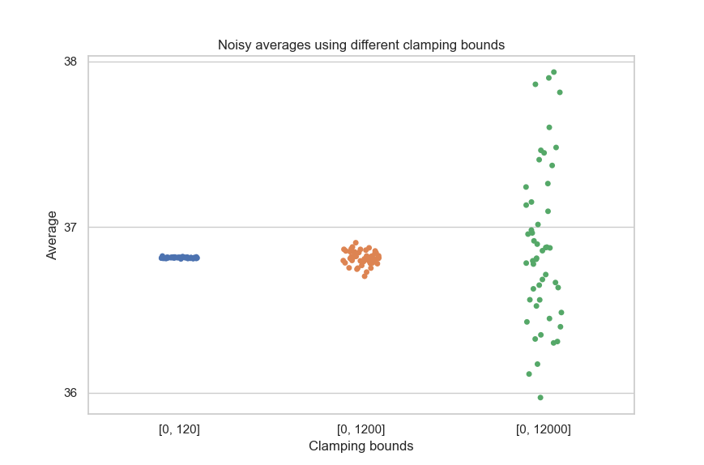
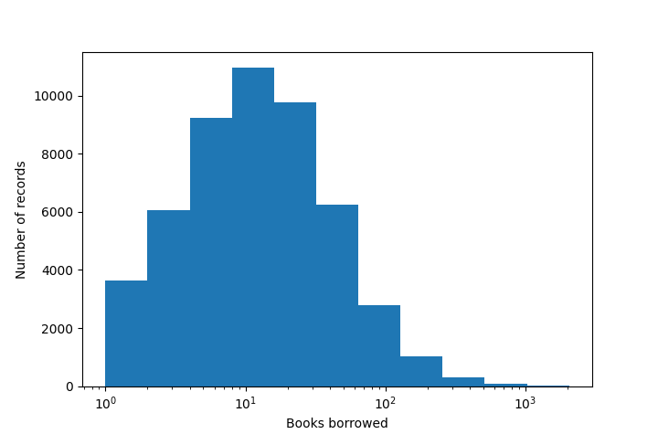

Numerical aggregations#
Counting queries, which we saw in the first and second tutorials, are very useful, but we often need a little more: sums, averages, medians… In this tutorial, we’ll see how to compute this larger class of aggregations with Tumult Analytics. These operations require us to learn and use a new concept: clamping bounds. In this tutorial, we’ll tell you what these are, how they work, and how to specify them in practice.
Setup#
The setup process is the same as in the earlier tutorials.
from pyspark import SparkFiles
from pyspark.sql import SparkSession
from tmlt.analytics import (
AddOneRow,
PureDPBudget,
QueryBuilder,
Session,
)
spark = SparkSession.builder.getOrCreate()
spark.sparkContext.addFile(
"https://tumult-public.s3.amazonaws.com/library-members.csv"
)
members_df = spark.read.csv(
SparkFiles.get("library-members.csv"), header=True, inferSchema=True
)
Like before, let’s start a Session with infinite privacy budget, so the system will not return an error after a lot of queries are run. Don’t do this in production!
session = Session.from_dataframe(
privacy_budget=PureDPBudget(epsilon=float('inf')),
source_id="members",
dataframe=members_df,
protected_change=AddOneRow(),
)
Simple cases#
Let’s start by answering a simple query: what is the average age of members of our library?
mean_age_query = QueryBuilder("members").average("age", low=0, high=120)
mean_age = session.evaluate(
mean_age_query,
privacy_budget=PureDPBudget(epsilon=1)
)
mean_age.show()
+-----------+
|age_average|
+-----------+
| 36.81559|
+-----------+
Take a look at the query definition: the call to average has two additional
parameters, besides the column we want to compute the average on: low and
high. These are clamping bounds, and they indicate the possible range of
the input data. Here, clamping bounds of low=0 and high=120 indicate
that the individual values for column age will be in the interval
[0, 120].
When you know that there is a reasonable minimum and maximum for each value of a column, you can use those as clamping bounds. This is what we did here: without looking at the dataset, we made the assumption that all members of our library were younger than 120 years old, and that ages have to be a non-negative value.
Sometimes, the situation is not so clear. To understand what to do in more complex cases, let’s first explain what these clamping bounds actually do.
What do clamping bounds actually do?#
These minimum and maximum values for numerical columns aren’t just additional pieces of metadata: they directly affect the value of the computed statistics, possibly dramatically. In particular, they have two major effects.
As suggested by their name, the input data will be clamped within these bounds.
The amount of perturbation in the data will (typically) increase with the size of the clamping bounds.
Let’s look at each of these in turn.
Clamping the data#
When you specify clamping bounds, Tumult Analytics will enforce that the input data is within these bounds. If one of the values is too small, it will be converted to the lower clamping bound. And if a value is too large, it will be converted to the upper clamping bound. The following schema illustrates this operation.
![A schema representing the clamping operation visually: the interval [0, 120] is plotted on a number line, -8 is clamped to 0, while 152 is clamped to 120. The legend reads: "Initial input: [-8, 35, 152], clamped input: [0, 35, 120].](../../_images/clamping_bounds_schema.png)
This operation happens silently: Tumult Analytics won’t warn you if we are clamping values that are very far away from the bounds. For example, if your data almost only has negative values, but the lower bound is set to 0, then all this data will be clamped to 0, and you might get wildly inaccurate results.
Adjusting the perturbation#
Once the data is clamped to a specific interval, Tumult Analytics can know how much perturbation (noise) must be used in the differentially private algorithm. The larger the bounds, the more noise must be added.
This makes sense: the goal of differential privacy is to hide the impact of a single individual in the data, and clamping bounds limit that impact. If the clamping bounds are [0, 1000], then a single person can change the total sum by at most 1000: their impact can be 10 times larger than if the clamping bounds were [0, 100]. To adjust for this worst-case scenario, Tumult Analytics needs to add more noise to the data.
The following graph illustrates this phenomenon.

This underscores the importance of not overestimating the clamping bounds too much, to limit the magnitude of the perturbation used for the computation.
Choosing clamping bounds#
While there were obvious clamping bounds for age, in other cases, choosing
the clamping bounds may be a little more difficult. Say we have a column
capturing the number of books borrowed by each library member over the course of
their membership. We want to compute the sum of this column, to calculate how
many books were borrowed in total. What should the clamping bounds be?
A common first step to make this decision is to look at the most common values for this column. The following histogram gives us an idea of the data distribution.

This kind of distribution is common in real-world data: here, we can see that most rows have a value lower than 200, but there are outliers for which the value can be much greater. In those cases, it is often a good idea to choose clamping bounds that aren’t absolute limits over the data range, but are such that most values would fall within these bounds. Here, we could use 200, or even 100, as a clamping bound.
books_borrowed_query = QueryBuilder("members").sum("books_borrowed", low=0, high=200)
books_borrowed = session.evaluate(
books_borrowed_query,
privacy_budget=PureDPBudget(epsilon=1)
)
books_borrowed.show()
+------------------+
|books_borrowed_sum|
+------------------+
| 1171110|
+------------------+
Keep in mind that the value of clamping bounds themselves is not protected by the differential privacy property. Tumult Analytics considers these values as public information, and you should assume that someone observing your output data might deduce the value of clamping bounds. This makes it crucial to not make the choice of clamping bounds depend “too much” on the private data. Visualizing the data distribution and making a judgment call is typically acceptable, but taking e.g. the exact maximum value in the data isn’t: it would directly leak the value of a single data point.
Final words#
Having to set clamping bounds is a little annoying, but you will find that it can often make your data analysis more robust: it reduces the contribution of outlier data points, which could otherwise have an outsized influence on the results.
Now that you know the basics of how clamping bounds work, you can try out all
the aggregations supported by Tumult Analytics. This tutorial demonstrated
average and sum, but the same principle applies for quantile,
variance, and
all other aggregations.
So far, we only demonstrated global aggregations, calculating some statistic over the entire dataset, and returning a single number. In the next tutorial, we’ll explain how to compute histogram-like queries using Tumult Analytics.